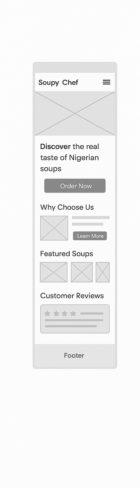
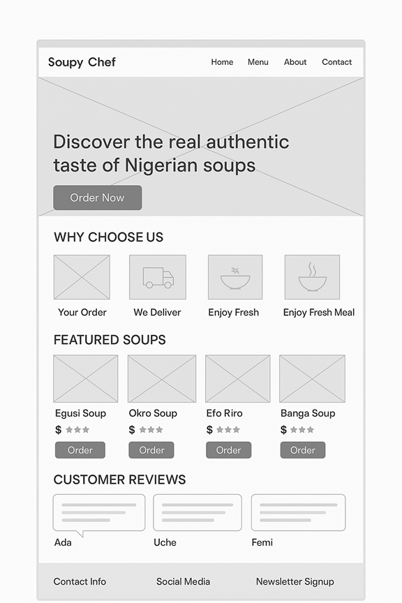

Soupy Chef – Website Plan
Site Name
Soupy Chef
This name represents a small Nigerian business that specializes in preparing and delivering fresh, authentic local soups. The name is short, easy to remember, and reflects the brand’s focus on homemade, delicious Nigerian cuisine.
(Optional domain: soupychef.ng)
Site Purpose
The purpose of the Soupy Chef website is to allow customers to:
- Browse a variety of traditional Nigerian soups.
- View prices, serving sizes, and ingredients.
- Place delivery orders conveniently online.
- Learn about the business story and delivery process.
- Read customer reviews to build trust and credibility.
Overall, the site aims to connect food lovers with real Nigerian flavors while providing a clean, easy-to-use platform for ordering homemade soups.
Scenarios
These are questions a typical visitor might have when visiting the site:
- What kinds of soups does Soupy Chef offer, and how much do they cost?
- How does delivery work, and which areas in Nigeria do you serve?
- Can I see pictures and reviews from other customers before ordering?
These questions help guide what information and features will appear on the site.
Color Scheme
Soupy Chef’s colors are inspired by food, freshness, and warmth — reflecting both Nigerian culture and appetizing design.
- Primary Color: 🟢 #2C8C36 (Green) — used for headings, buttons, and accents. Symbolizes freshness, nature, and healthy meals.
- Secondary Color: ⚪ #F5F5F5 (Light Gray/White) — used for background areas to keep the layout clean and modern.
- Accent Color: 🟠 #F29E38 (Orange) — used for highlights, icons, and calls to action like “Order Now.”
This palette ensures the website feels lively and appetizing while maintaining readability and contrast.
Typography
The fonts are chosen for readability and modern appeal:
- Headings: Poppins – a clean, bold sans-serif font that gives a professional yet friendly feel.
- Body Text: Open Sans – easy to read and great for paragraphs and menu descriptions.
This combination helps keep the site modern and approachable, matching the brand’s personality.
Wireframe (Layout Plan)
Mobile View
- A hero image with the logo and a tagline at the top.
- A short “Why Choose Us” section.
- A few featured soups are displayed in cards with pictures and prices.
- Menu button or link to see all soups.
- Testimonials and a footer with contact and social links.

Desktop View
- A full-width hero banner with soup images and tagline.
- “Why Choose Us” section with images and text side-by-side.
- A three-step process (“Order – We Deliver – Enjoy”).
- Menu section displaying soups in a grid layout with ratings and order buttons.
- Customer reviews carousel.
- Footer with newsletter form, contact info, and links.

Planned Website Content
The website will include the following pages:
- Home Page – Hero banner, business introduction, featured soups, and highlights.
- Menu Page – A gallery of soups (Egusi, Okro, Efo Riro, Banga, Pepper Soup) with descriptions, prices, and “Add to Cart” buttons.
- About/Delivery Page – Story of the business, values, and delivery information.
- Reviews Page or Section – Customer testimonials and ratings.
- References Page – Citations for images, content sources, and other resources used.
- Footer Section – Contact details, social media links, and newsletter signup.
Reason for Choosing this Subject
I chose this topic because food connects people, and Nigerian soups are an essential part of local culture. This project lets me showcase something familiar and meaningful while also building real-world web design skills. It’s practical, fun to design, and provides a great opportunity to apply responsive design, JavaScript interactivity, and localStorage for managing cart data.